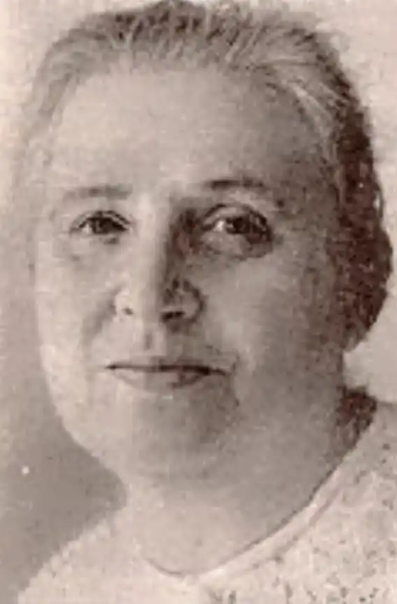

Народилася Паола Володимирівна Утевська 14 вересня 1911 року в Одесі в сім'ї скульптора.
Закінчила 1925 року трудову школу, 1931 року — робітфак Київського хіміко-технологічного інституту, а 1941 року — філологічний факультет Київського університету. Однак не стала ні хіміком, ні філологом. Як і багато її ровесників, одягла військову форму і пішла на фронт. Щоправда, наступного року в одній армійській газеті Сталінградського фронту з'явилась її перша стаття. В Сталінграді Паола Володимирівна була начальником госпітальної бібліотеки.
В травні 1942 року її було контужено та важко поранено. Після одужання до кінця війни Паола Утевська перебувала в армії. Її нагороджено медалями. Після закінчення війни оселилася в Києві, 1945-1949 рр. була літературною консультанткою в "Літературній газеті", згодом працювала в журналі "Вітчизна". Друкувала статті, нариси, оповідання та казки в періодиці. Перша книжка, написана у співавторстві з матір'ю, під назвою "З чорного золота" побачила світ 1960 року. Це була популярна розповідь про синтетичні матеріали. От коли став письменниці у пригоді хімічний факультет! Відтоді П. Утевська пише для дітей різного віку книжки науково-художні та історичні: "Невмирущі знаки", "Вічні мандрівники", "Правда, яка нагадує казку", "Квітковий годинник"... Про що ці книги? Про життя. Про те, що давно минуло, та про сучасність. Про навколишній світ, про живу та неживу природу. Вражає ерудиція письменниці в багатьох галузях науки, її надзвичайна любов до природи. Померла 2001 р. в Києві.